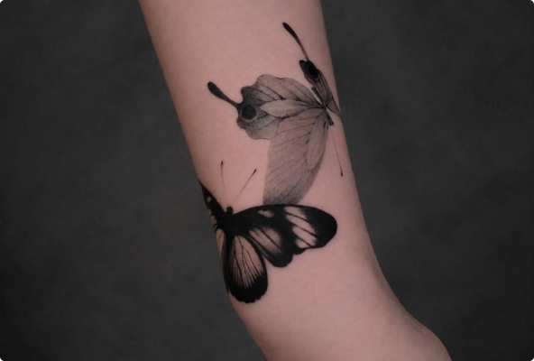
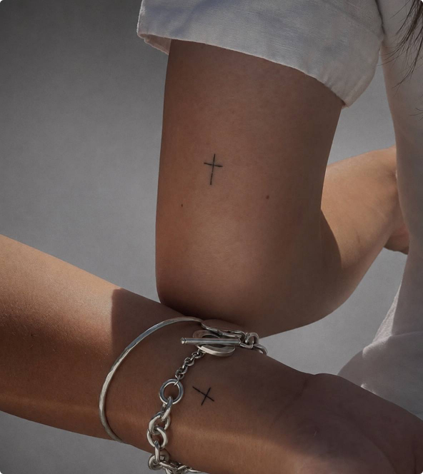
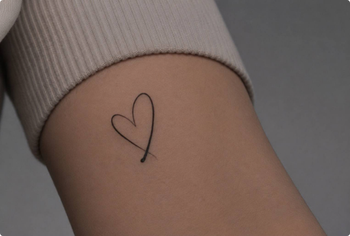
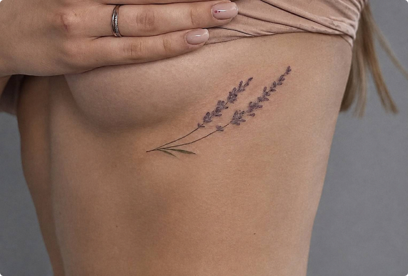
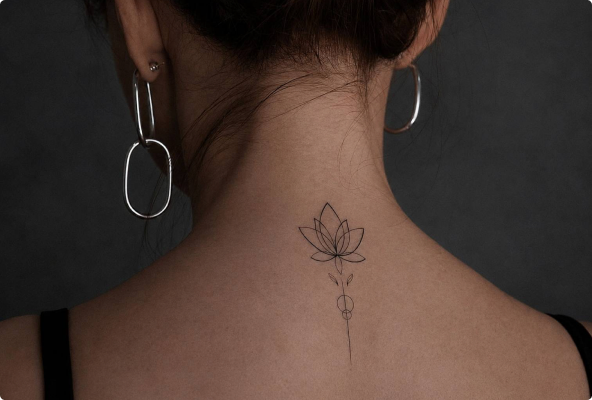
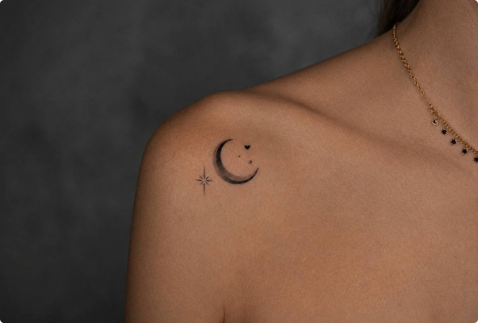
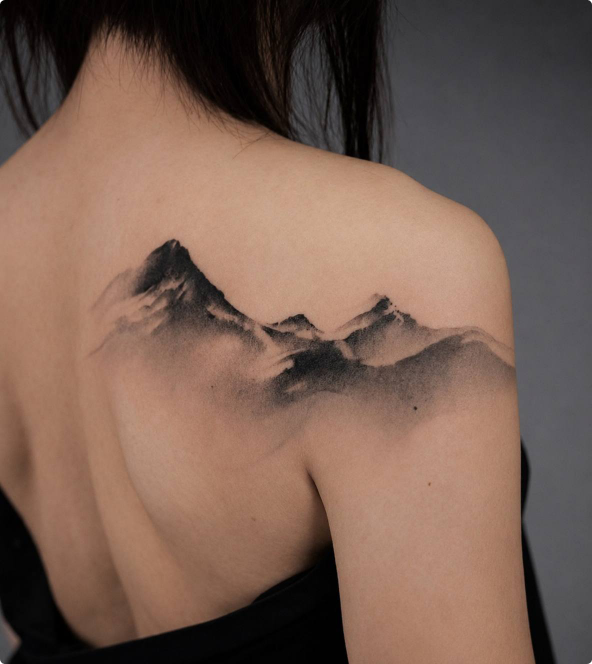
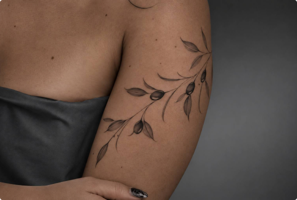

ЖИВОТНЫЕ
Бабочка
Бабочка символизирует трансформацию, свободу и развитие. Её превращение из гусеницы в бабочку часто связывают с переменами, новым этапом жизни... 


Тату-студия в Иваново
Татуировки по авторским эскизам.

Бабочка символизирует трансформацию, свободу и развитие. Её превращение из гусеницы в бабочку часто связывают с переменами, новым этапом жизни... 

Крест — один из самых древних и узнаваемых символов, который встречался в разных культурах задолго до появления христианства. В христианской традиции он связан с распятием Иисуса Христа и символизирует веру, жертвенность... 

Сердце символизирует любовь, чувства и эмоциональную связь — пожалуй, это одно из самых универсальных изображений с таким значением... 

Лаванда символизирует спокойствие, чистоту, гармонию и эмоциональное равновесие. На протяжении истории это растение ценили за характерный... 

Лотос символизирует чистоту, возрождение, просветление и способность преодолевать сложные обстоятельства. Особое значение этого цветка связано с тем... 

Луна символизирует интуицию, циклы, трансформацию и скрытые грани личности. Во многих культурах её повторяющиеся фазы связывали… 

Горы символизируют стойкость, стабильность, перспективу и стремление к чему-то большему. Путь к вершине часто воспринимается как метафора преодоления трудностей, достижения целей и личностного роста. Горы также тесно... 

Оливковая ветвь символизирует мир, примирение, надежду и завершение конфликта. Эта ассоциация появилась ещё в древних культурах... 
Пока нет татуировок в этой категории.


 КОНТАКТЫ
КОНТАКТЫ